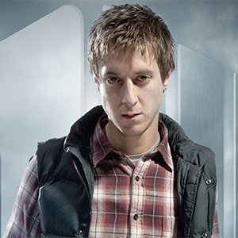

| Home The Doctors The Companions The Villains | |||||||||
 |
|||||||||
|
Rory WilliamsArthur DarvillRory Arthur Williams is a fictional character portrayed by Arthur Darvill in the long-running British science fiction television series Doctor Who.[1] Having been introduced at the start of the 5th series, Rory joins the Eleventh Doctor (Matt Smith) as a companion in the middle of Series 5.[2][3][4] As Amy Pond's fiancé, Rory is initially insecure because he believes Amy secretly loves the Doctor more. Later, however, he proves to be a hero in his own right and he and Amy marry. The couple conceive a daughter aboard the Doctor's time machine, the TARDIS, while in the time vortex, but their baby is kidnapped at birth. In "A Good Man Goes to War", Rory and Amy discover their time-traveler friend River Song is actually their daughter Melody Pond. The Doctor and River marry in "The Wedding of River Song", and Rory becomes the Doctor's father-in-law. In "The Angels Take Manhattan", the fifth episode of the seventh series, he and Amy are transported back in time by a Weeping Angel, leading to the couple's departure from the series. Rory was a character who was "completely in love" with Amy, but Amy had things to do in life before admitting she loved him too. Moffat described Rory as someone who had grown up in the "shadow" of Amy's imaginary Doctor.[30] Rory became a nurse because of this.[31] Rory eventually "mans up" and evolves into a "bumbling action hero".[32][33] Speaking of Rory's characterisation in the first series, actor Darvill felt that he was "on the outside looking into this world he was desperately trying to save Amy from."[34] Executive producer Steven Moffat had intended to have a married couple on the TARDIS "from the off".[35] Darvill stated of the couple's marriage that Amy will always "wear the trousers". However, he felt that Rory's marriage had stopped the character "feeling so unworthy." In regards to how Rory changed between series five and six, Darvill stated that "his sense of adventure has awoken" and that he is more comfortable with himself.[34]
|
||||||||